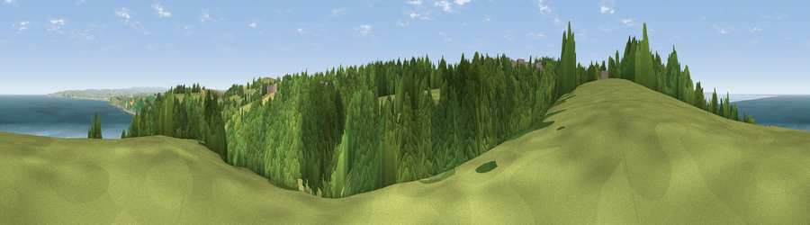

Viewpoint near Bucks Mills
#1076 in England · top 3% of its area beats it · near Bucks Mills · path 240 mWhere it is
The exact computed spot (SS 35412 23288). Click the marker for map links.
Public access: the nearest public right of way is about 240 m away — the final stretch may cross private land. Computed from Natural England's CRoW access layer and OpenStreetMap rights of way — not the legal definitive map. Always verify locally.
The view, rendered

A 360° render of this exact spot computed from the terrain model, tree cover and land cover — summer colours, afternoon light, calibrated against photographs of famous viewpoints. Real trees, hedges and buildings will differ in detail.
The panorama
Grey silhouette: terrain skyline in each direction (720 bearings, Earth curvature and refraction included). Dashed green: skyline with trees (+15 m) and buildings (+8 m) as obstacles. Blue strip: how far the ground is visible on each bearing.
Where the view opens
Wedge length = distance to the farthest visible ground on that bearing (vegetation-aware). Rings at 10, 25 and 50 km.
What fills the view
42% water · 39% woodland · 18% grassland · 1% cropland ·
Angular shares of the visible panorama (visual magnitude), not map area. Landscape diversity 0.49 (0–1 Shannon).
Key numbers
More beautiful places nearby
The staircase of upgrades: each row has a higher view potential than everything closer. Driving times are estimates from straight-line distance, calibrated against real road routing — check an actual route before setting out.
| Place | Direction | Drive | Score |
|---|---|---|---|
| Viewpoint near Bucks Mills | W · 2 km | ~4 min | 82.0 |
| Viewpoint near Bucks Mills | ENE · 2 km | ~5 min | 84.0 |
| Viewpoint near Woolacombe | NNE · 21 km | ~36 min | 84.7 |
| Viewpoint near Combe Martin | NE · 34 km | ~52 min | 86.9 |
| Viewpoint near Combe Martin | NE · 35 km | ~53 min | 88.9 |
| Holdstone Hill | NE · 36 km | ~55 min | 90.2 |
| The Knoll | ESE · 123 km | ~147 min | 91.0 |
50.98540, -4.34627 · source: screening · position refined by local search. Computed location — check access rights before visiting.